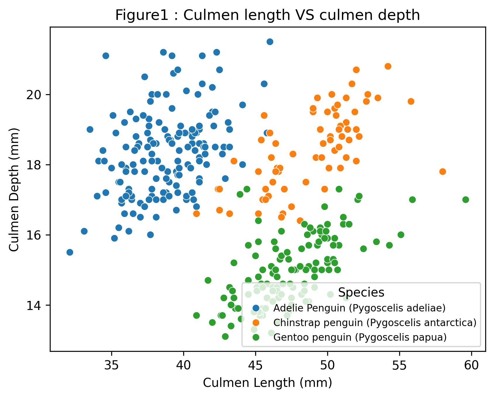
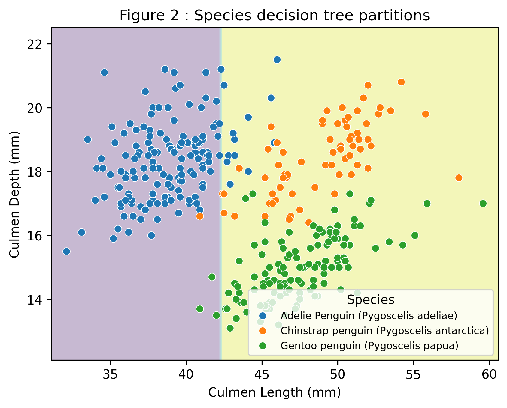
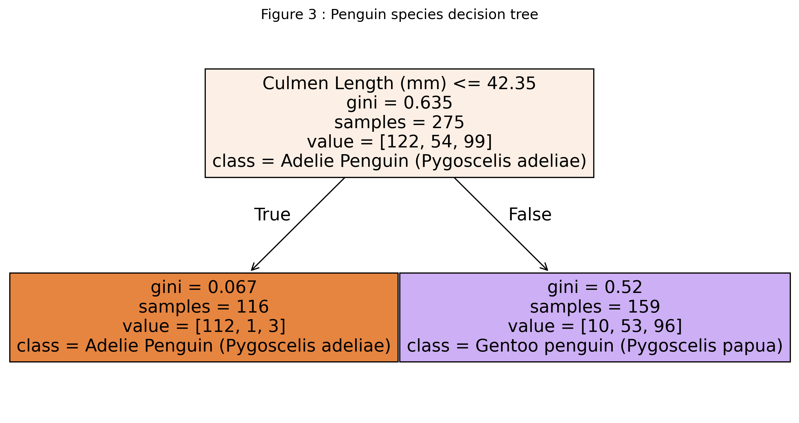
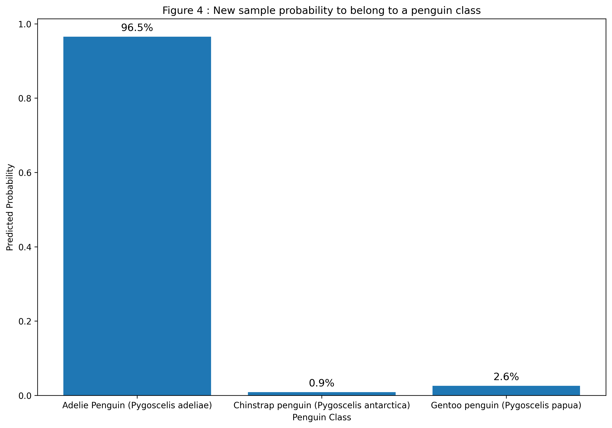
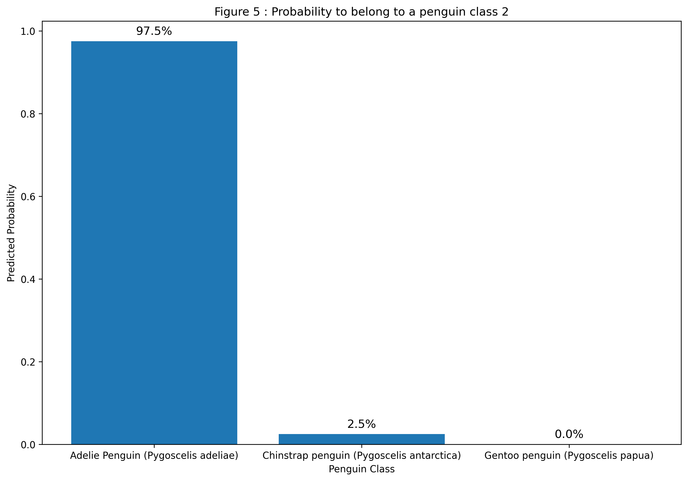

🇫🇷 Visualisations du projet
Cette page regroupe les graphiques générés pour l’analyse du jeu de données Penguins.
🇬🇧 Project Visualisations
This page displays the plots generated for the Penguins dataset analysis.

Figure 1 - Culmen length VS culmen depth

Figure 2 - Species decision tree partition

Figure 3 - Penguin decision tree (low depth)

Figure 4 - New sample probability to belong to a penguin class

Figure 5 - New sample probability to belong to a penguin class (higher depth)